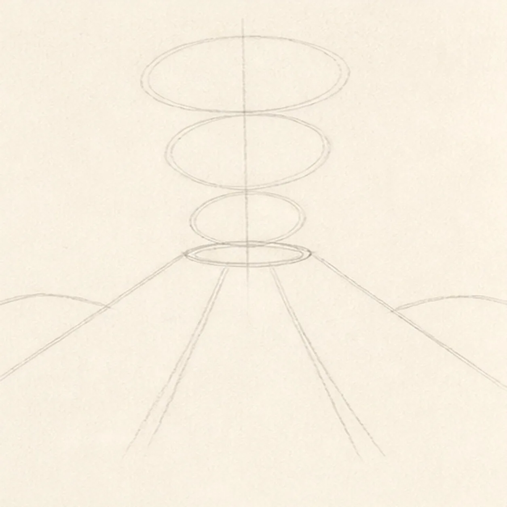
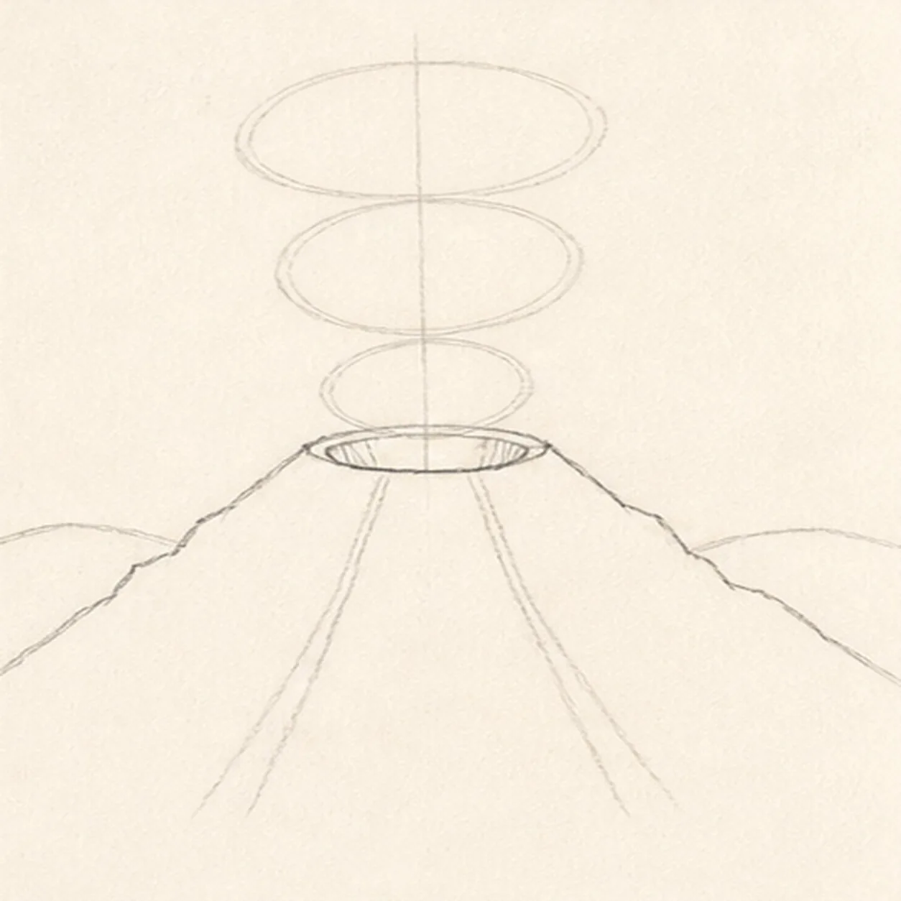
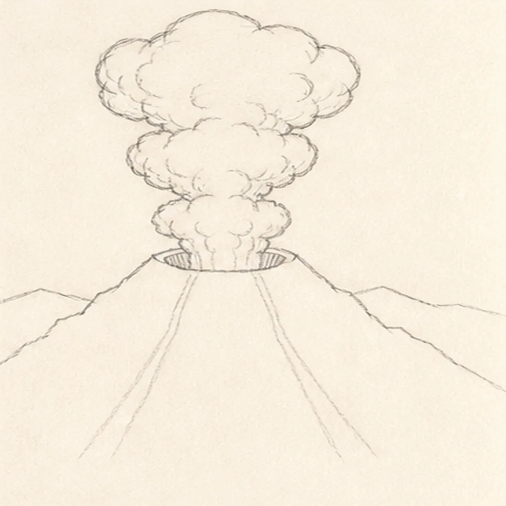
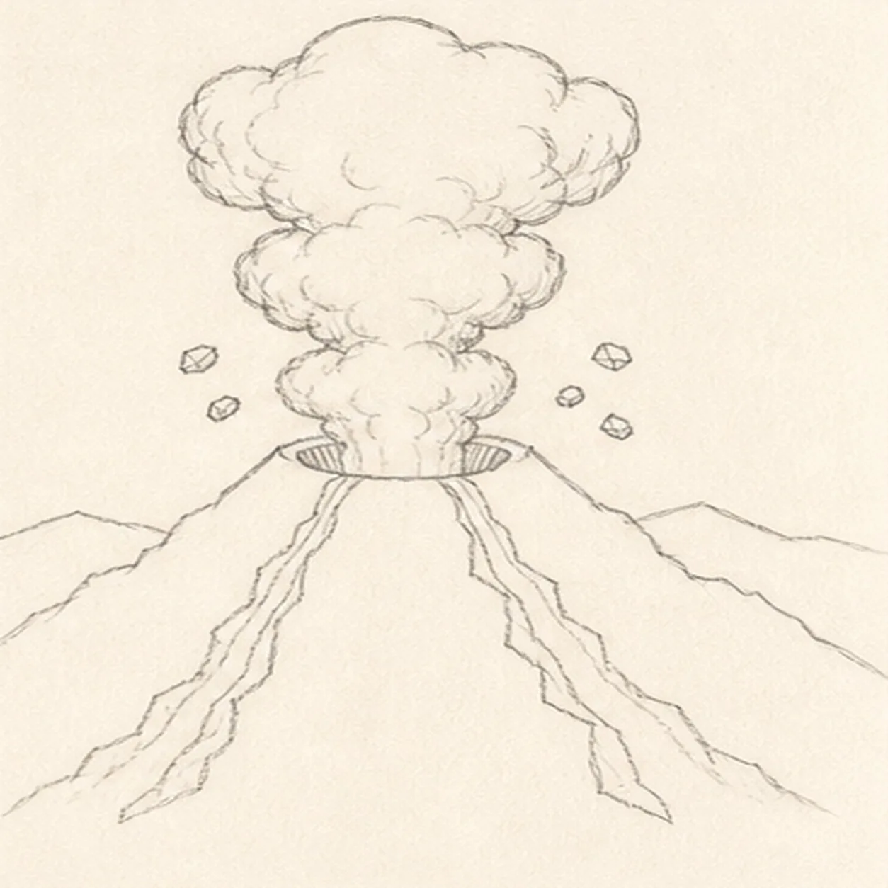
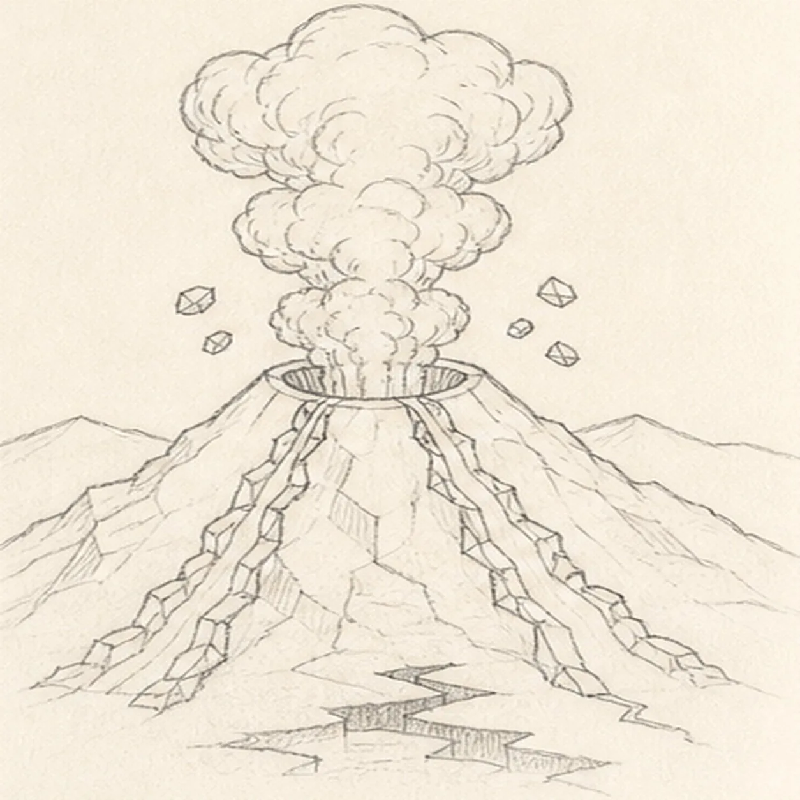
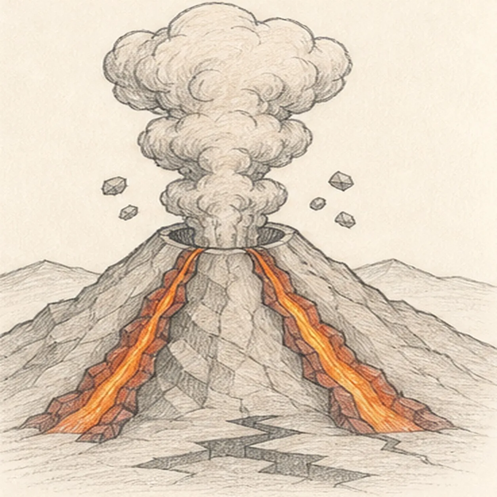
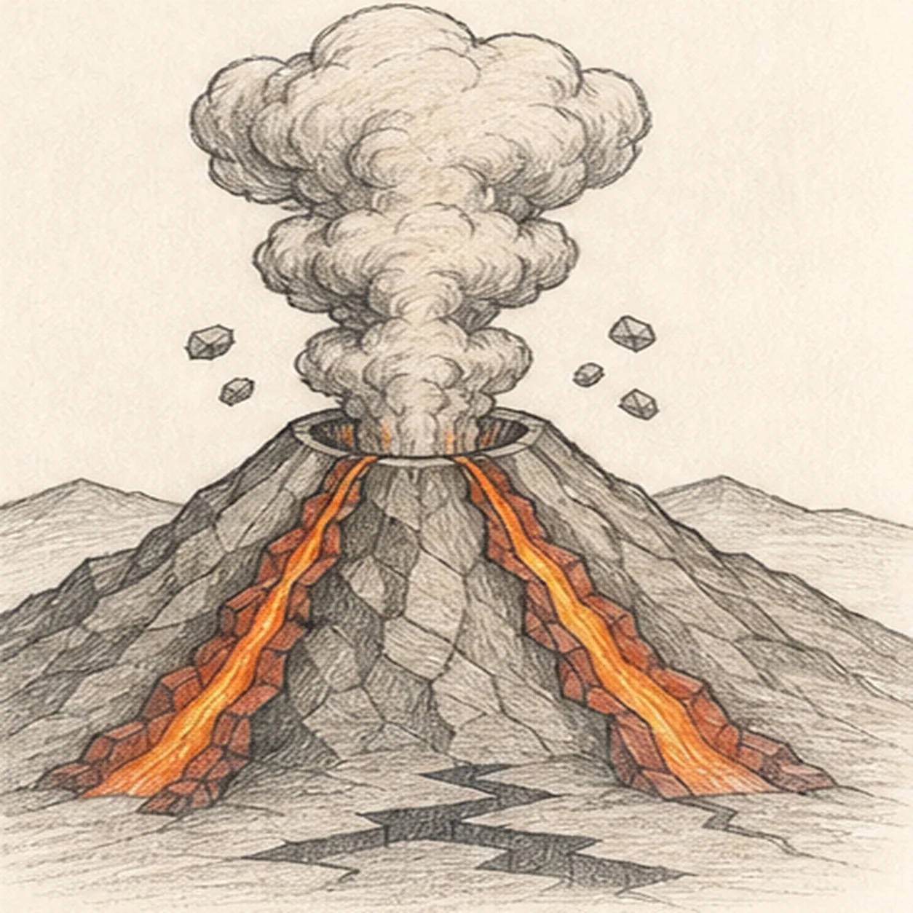

From the archive
Let's draw a volcano
Treat this as one small practice round: build the subject lightly, notice the shapes, then darken only the lines that help the finished sketch.
-
01

Map the cone and eruption
Use pale HB to place one wide mountain envelope, a shallow centered crater ellipse, one vertical plume spine with three widening oval guides, exactly two lava routes, and two low ground arcs.
Sketch tip: Ghost both mountain slopes before touching down. Keep the crater centered over the cone and trace each lava route from inside the rim to its fixed lower-cone anchor.
-
02

Shape the cone and reserve the vent
Wrap the envelope with two broken rocky mountain shoulders, then add only two short crater side-rim arcs and leave the central plume footprint open.
Sketch tip: Rotate the page for each long slope. Stop both crater arcs before the plume spine; the smoke will fill that reserved gap in the next step without hiding finished crater work.
-
03

Build the plume and landscape
Turn the plume guides into three stacked cloud tiers attached to the crater, then clarify the two low ground ridges behind the cone.
Sketch tip: Overlap rounded smoke lobes around the same center spine. Stop each ground-ridge line at the cone silhouette instead of drawing through the volcano.
-
04

Add lava and flying rocks
Give the two planned lava routes narrow banks and place exactly five small ejected rocks in two arcs beside the plume.
Sketch tip: Keep both lava streams narrower near the crater and wider near the base. Count two rocks on the left and three on the right before moving on.
-
05

Map rock and smoke texture
Add sparse angular rock planes, inner plume curls, crater-lip hatching, and the established broken foreground shadow without filling them solid.
Sketch tip: Aim rock hatching down the cone rather than across it. Leave open paper between groups so the mountain does not become one gray triangle.
-
06

Layer value and lava color
Map directional graphite, warm-gray ash, muted rust-red lava banks, orange-yellow lava cores, and cool-gray shadow over only the established forms.
Sketch tip: Build color with two light layers that follow each lava stream. Keep the hottest center strip brightest and let graphite carry most of the mountain texture.
-
07

Clarify ash and rock depth
Deepen the established ash shadows, lava edges, rock hatching, graphite grain, and open-paper highlights without adding forms.
Sketch tip: Squint at the page before darkening. The bright twin lava routes and open crater should read first, with the plume remaining lighter than the cone.
-
08

Finish the volcanic landscape
Strengthen selected keeper contours, deepen the same mapped graphite and restrained colors, and clarify only the existing plume, lava, rocks, highlights, and shadow.
Sketch tip: Count one crater, three plume tiers, two lava streams, five flying rocks, and two ground ridges, then stop while the paper tooth still breaks through the shading.